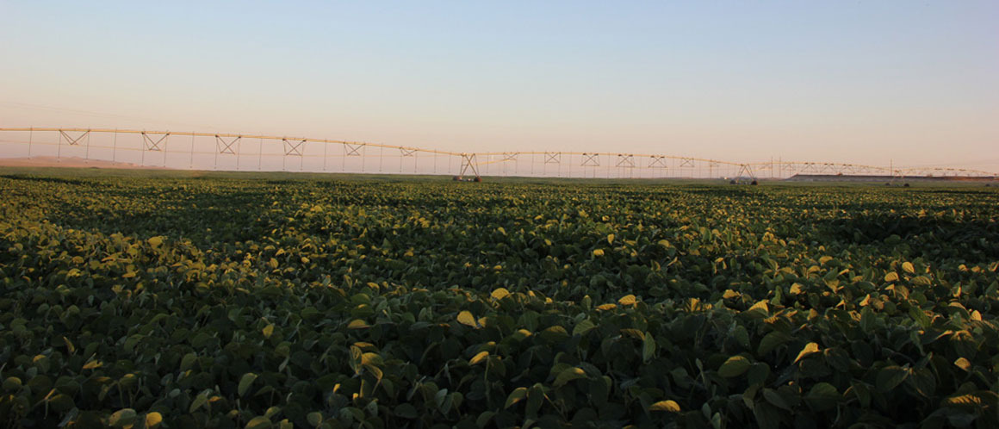
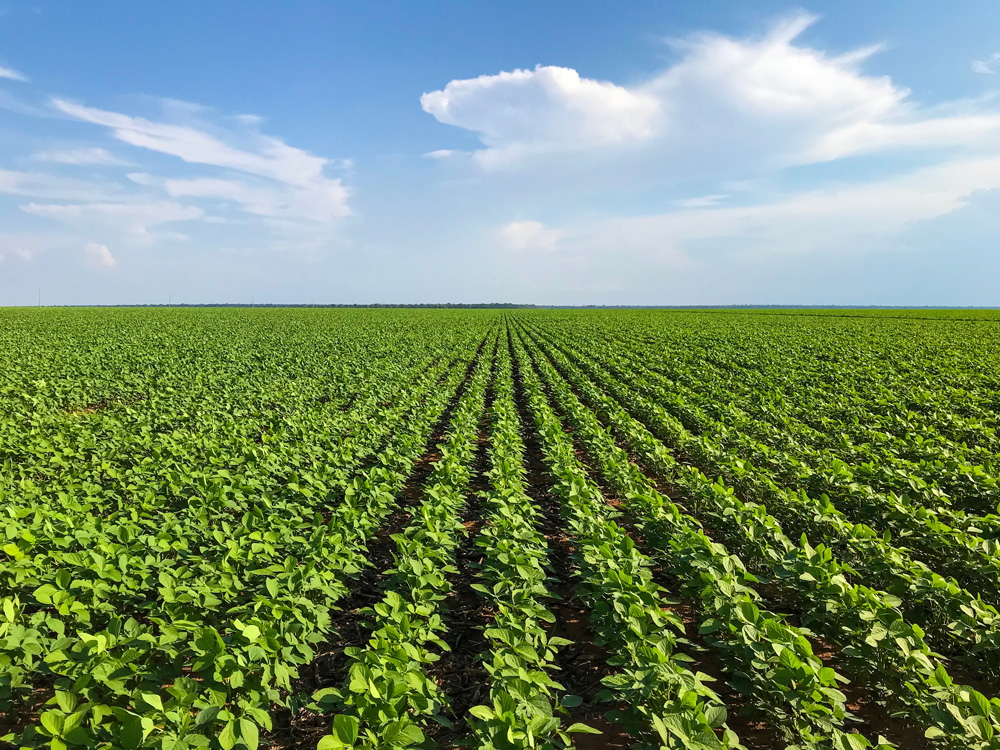

Speak with a human to filling out a form? call corporate office and we will connect you with a team member who can help.
Dünyanın ən böyük soya ixracatçıları ABŞ, Braziliya, Argentinadır və hər il soya əkin sahələri genişlənməkdə davam edir. Soyanın yaşıl kütləsinin bir yem vahidində 217, yem paxlasında 218, lərgədə 201, göy noxudda 175 qr həzm olunan protein olur. Soyanın dənindəki bir yem vahidində 223, lüpində 245, göy noxudda 158, gülüldə 186, lərgədə 210, yem paxlasında 211 qr həzm olunan protein vardır. Soya bitkisinin əkin sahələrinin daha da genişləndirilməsinin əsas səbəblərinə təkcə ölkə daxilində heyvandarlığın xarici yemdən asılığını minimum endirmək deyil, həm də məhsulun yüksək ixrac potensialının olmasıdır. Azərbaycan quşçuluq məhsulları ilə daxili bazarın 98 faizini təmin etməsinə baxmayaraq bu səhənin yem təminatının 85%-dən çox xaricidən asılıdır. Xaricdən gələn yem məhsullarının böyük hissəsini soya təşkil edir ki, bu da kifayət qədər valyuta ehtiyatlarının ölkədən getməsi deməkdir. Ölkədə bu məhsulun dəyərini əkinçilərdən daha çox, quş əti və süd məhsulları istehsalçıları hiss etsə də, əkinçilik təsərrüfatları hələ də bu bitkinin becərilməsində o qədər də maraqlı deyil. Soya özü qiymətli olduğu kimi, torpaq üçün də faydalıdır. Dənli bitkilər, qarğıdalı ilə növbəli əkilə bilən soya torpağı azotla zənginləşdirir. Torpaqda atmosferin təbii azot dövriyyəsini təmin etdiyinə görə, xüsusilə azot gübrələrinə yüksək tələbatı yoxdur. Qarğıdalı və pambıq qədər suya tələbkar deyil. Azərbaycanda yem istehsalının gücləndirilməsi, bu sahədə idxalının azldılması istiqamətində “Azərşəkər” MMC artıq müvafiq addımlar atmaqdadır. Belə ki, 2019-cu ildə 38 ha sahədə soyanın test əkinləri aparılmış və bu bitkinin Azərbaycanda suvarma şəraitində həm əsas, həm də təkrar bitki kimi əkilməsinin mümkünlüyü müəyyənləşdirilmişdir. Soya bitkisinin becərilməsi sahəsində qiymətli təcrübə qazanılmışdır. Artıq 2020-ci ildə bu bitkinin əkin sahələrinin genişləndirilməsi istiqamətində işlər həyata keçirilməkdədir. Məhsulu zülalla zəngin olduğundan ərzaq, yem və texniki məqsədlər üçün becərilir.
Əsasən su ilə yaxşı təmin olunmuş şabalıdı, açıq-şabalıdı boz-qonur torpaqlar və s. soya üçün yararlıdır. Növbəli əkində soyanı dənli taxıl, qarğıdalı və pambıq bitkisindən sonra becərmək olar. Soyanı, soyadan, günəbaxandan, birillik dənli-paxlalılardan və çoxillik paxlalı yem otlarından sonra əkmək olmaz.
Sələf dənli taxıl bitkiləri olarsa, məhsul yığılan kimi küləş sahədən çıxarılmalı və kövşən yeri üzlənilməlidir. Birinci üzləməni 6-8 sm dərinlikdə üzləyici texnika ilə üzləmək, əgər ehtiyac varsa 2-ci üzləməni ağır diskli malalarla 10-12 sm dərinlikdə aparırlar. Üzləmədən 10-15 gün sonra sahə kotanla 28-30 sm dərinlikdə şumlanmalıdır. Qarğıdalıdan sonra sahə iki iz ağır diskli mala ilə disklənməli və bundan sonra əkin qatı dərinliyində (25-27 sm) şumlanmalıdır. Torpaq yazda kompleks kultivator ilə səpinqabağı işlənməlidir.
Soya istilik və rütubət sevən bitkidir. Çiçəkləmə və yetişmə dövründə daha yüksək yəni 18-25°C temperatur tələb edir. Toxumlar 6-8°C temperaturda cücərir. Soyanın cücərtisi 2-5°C ətrafında olan yaz şaxtalarını yaxşı keçirir. Bu bitki çiçəkləmə və dənədolma fazasında ən çox su tələb edir. Transpirasiya əmsalı 600-ə yaxındır. Çiçəkləmə fazası 15-40 gün, gecyetişən sortlarda isə 80 günə qədər davam edə bilir. Soya qısa gün bitkisidir. Şoran və şorakət torpaqlardan başqa digər torpaqlar soya üçün əlverişlidir. Soya pH=6,5-7,0 olan neytral reaksiyalı torpaqlarda daha yaxşı inkişaf edir. Səpin üçün R1 reproduksiyalı sort toxumlar götürülməlidir. Səpindən əvvəl toxum azotobakter, bioprotektor və funqisidlə işlənməlidir. Toxum yarımquru üsulla dərmanlana bilər. Mütləq kütlədən asılı olaraq hektara 50-90 kq (400-600 min ədəd) cücərə bilən toxum səpilməlidir. Soya gencərgəli nöqtəvi üsulla, yəni cərgəarası 45-60 sm olmaqla səpilə bilər. Səpin əkin qatında temperatur 10-12°C olduqda aparılır. Toxumlar nəmliklə təmin olunmuş sahələrə səpilir və ya səpindən sonra dərhal suvarma aparılır.
 Soya gübrələməyə həssas bitkidir. Təcrübələrlə müəyyən edilmişdir ki, soya 20 sentner dən məhsulu əmələ gətirmək üçün 142 kq N, 32 kq P2O5, 35 kq K2O mənimsəyir. Əsas şum altına 150 kq ammafos gübrəsinin verilməsi məqsədəuyğundur. 60 kq qədər karbomid səpinlə birgə tətbiq edilir. Soya atmosfer azotunu fiksasiya edərək torpaqda azot topladığı üçün azot gübrəsi yalnız toxumların ilkin cücərmə və inkişaf fazasında ehtiyac duyur. Sonrakı mərhələlərdə azot yemləməsi bitkinin köklərində olan azotabakterin inkişafına mənfi təsir edir. Eyni zamanda vegetasiya müddətində bir dəfə kompleks mikrogübrələrlə kökdənkənar yemləmə aparılması məqsədəuyğun hesab edilir. Alaqlarla ilk mübarizə məqsədilə səpindən dərhal sonra torpaq herbisidinin çilənməsi ilk dövrlərdə alaqlara nəzarət üçün əlverişli mübarizə hesab edilir. Sonrakı mərhələlərdə alaqlar göründükdə herbisid çilənməsi aparılmalıdır. Kiçik təsərrüfatlarda isə 6-8 sm dərinlikdə kultivasiya çəkilə bilər. Lakin kultivator bütün alaqları məhv etmək imkanına malik deyil. Vegetasiya müddətində tor gənəciyinə və yarpaqyeyən həşəratlara qarşı insektisidlə və xəstəliklərə qarşı funqisidlə mübarizə aparılır.
Kütləvi çiçəkləmə, paxlaların əmələ gəlməsi və dənin dolması mərhələlərində soya nəmliyə ən çox tələbat göstərir. Bitkinin normal inkişafı üçün vegetasiya müddətində 4500-5000 m3/ha su tələb olunur.
Yetişərkən soya paxlası açılmır ona görə də dən itkisi az olur. Dən məqsədi ilə əkdikdə soya tam yetişmə fazasında, yarpaqların töküldüyü, gövdələrin quruduğu və paxlaların saralmağa başladığı dövrdə dəndə 14-16% nəmlik yığılmalıdır. Kombaynın kəsici aparatı ən aşağıdan biçmək üçün nizamlanmalıdır və ya bu məqsədlə relyefi kopyalamaq imkanına malik fleksi başlıqlardan istifadə edilir. Yetişməni sürətləndirmək məqsədilə tezyetişən sortlar əkilən sahələrdə desikasiya aparılır. Yığılmış toxumda nəmlik 14% -dən çox olarsa asfalt meydançada günəş altında qurudulmalı və digər qatışıqlardan təmizlənməlidir.
Qarğıdalının mexanikləşdirilməsinə onun səpinində yüksək dəqiqlikli toxumsəpənlərdən istifadə, suvarılmasının mexanikləşirilməsi, gübrələnməsi, alaq otları, xəstəlik və zərərvericilərə qarşı mübarizə tədbirləri məqsədilə pestisidlərin çilənməsi və yığımın təşkilindən ibarətdir. Bir sıra təsərrüfatlarda cərgə aralarında kultivasiya işləri (birinci kultivasiyanın 8-10 sm, ikincinin 6-8 sm, üçüncünün isə 5-6 sm dərinliklərdə aparılması) nəzərdə tutulsa da, intensiv texnologiyaların tətbiq olunduğu təsərrüfatlarda kultivatorlardan istifadə minimuma endirilir və ya demək olar ki, istifadə olunmur.Qarğıdalı qida maddələrinə tələbkar bitkidir. Odur ki, əkindən daha öncə torpaqda qida maddələrinin miqdarının müəyyən olunması və ona uyğun qida maddələrinin miqdarının müəyyənləşdirilməsi tələb olunur. Bununla yanaşı vegetasiyanın müxtəlif mərhələlərində torpaq və bitki analizi yolu ilə qida maddələrinin mənimsənilməsi dinamikasının müəyyənləşdirilməsi və ona uyğun gübrələmə proqramına düzəlişlərin edilməsinə də ehtiyac vardır. 1 ton qarğıdalı məhsulu (dən) ilə torpaqdan 30 kq azot, 10 kq fosfor və 29 kq kalium aparır. Odur ki, torpaqda olan qida maddələrinə və planlaşdırılan məhsula görə gübrə normaları hesablanır. Fosfor və kalium gübrələri payızda şum altına verilir. Azotlu gübrələrin isə (ammonium nitrat, kabramid və s.) 30 % səpinlə birgə, qalanı isə vegetasiya müddətində yemləmə şəklində tətbiq edilr.